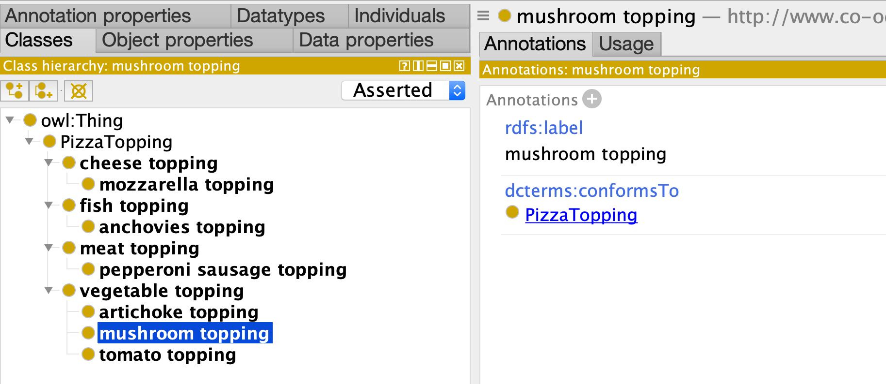

Part 1: Basics
Let's start with absolute basics - our goal here is to make a small simple hierarchy of pizza toppings.
To do this we need two components:
- A template for pizza toppings
- A collection of pizza topping records
In LinkML parlance, templates are classes, and records are instances, but note this can get confusing as our records/instances will be later translated to OWL classes!
Templates/classes are organized together in a schema, represented as a YAML file
First Schema: Pizza Toppings
Here is our first schema:
id: http://www.co-ode.org/ontologies/pizza/2005/10/18/pizza.owl
name: Pizza-Ontology-Metamodel
prefixes:
pizza: http://www.co-ode.org/ontologies/pizza/2005/10/18/pizza.owl#
linkml: https://w3id.org/linkml/
dcterms: http://purl.org/dc/terms/
default_curi_maps:
- semweb_context
default_prefix: pizza
imports:
- linkml:types
classes:
PizzaTopping:
annotations:
owl: Class
attributes:
id:
name: id
identifier: true
range: uriorcurie
label:
name: label
annotations:
owl: AnnotationAssertion
slot_uri: rdfs:label
conforms_to:
name: conforms_to
annotations:
owl.fstring: AnnotationAssertion( dcterms:conformsTo {id} pizza:{V} )
slot_uri: dcterms:conformsTo
designates_type: true
subClassOf:
name: subClassOf
annotations:
owl: SubClassOf
slot_uri: rdfs:subClassOf
range: PizzaTopping
The header part of the schema is fairly standard linkml boilerplate. We can focus our attention
on the classes section. Here we see we have introduced to represent pizza toppings.
NOTE: if you are familiar with OWL templating systems such as ROBOT and DOSDPs, you may want to think of these classes as "templates"
We have 4 attributes at this time:
- An id, which holds the unique IRI of the record (identifier is set to true)
- A label, mapped to rdfs:label
- conformsTo, which serves as the record type designator -- more on this below
- subClassOf, mapped to rdfs:subClassOf
Note that the above schema is a standard LinkML schema, and you can find out more details about the different schema elements on the linkml.io/linkml site.
The LinkML-OWL framework makes use of OWL interpretations annotations on classes and attributes. In the above schema:
- records instantiating PizzaTopping are interpreted as Classes
- labels are interpreted as AnnotationAssertions
- subClassOf is interprted as SubClassOf
These are all terms in the official OWL2 syntax, which can be consulted for more details
Ontology Source Records
Next we provide a set of records that are used to populate our template. These can be specified in different ways, but for many purposes YAML is the best.
We will create a file that is a YAML list, with each element being a record that instantiates a PizzaTopping template. Each key in the record conforms to the above schema:
# toppings
- id: pizza:FishTopping
label: fish topping
conforms_to: PizzaTopping
subClassOf: pizza:PizzaTopping
- id: pizza:MeatTopping
label: meat topping
conforms_to: PizzaTopping
subClassOf: pizza:PizzaTopping
- id: pizza:VegetableTopping
label: vegetable topping
conforms_to: PizzaTopping
subClassOf: pizza:PizzaTopping
- id: pizza:CheeseTopping
label: cheese topping
conforms_to: PizzaTopping
subClassOf: pizza:PizzaTopping
- id: pizza:PepperoniSausageTopping
label: pepperoni sausage topping
conforms_to: PizzaTopping
subClassOf: pizza:MeatTopping
- id: pizza:AnchoviesTopping
label: anchovies topping
conforms_to: PizzaTopping
subClassOf: pizza:FishTopping
- id: pizza:ArtichokeTopping
label: artichoke topping
conforms_to: PizzaTopping
subClassOf: pizza:VegetableTopping
- id: pizza:MushroomTopping
label: mushroom topping
conforms_to: PizzaTopping
subClassOf: pizza:VegetableTopping
- id: pizza:TomatoTopping
label: tomato topping
conforms_to: PizzaTopping
subClassOf: pizza:VegetableTopping
- id: pizza:MozzarellaTopping
label: mozzarella topping
conforms_to: PizzaTopping
subClassOf: pizza:CheeseTopping
Note that the conformsTo value is the same for every record. This may seem redundant, but as we will see later, an ontology is typically built from different templates.
Note the use of CURIEs throughout the file. Prefixes must be declared in the header of the schema
Compiling to OWL
Next we will compile our PizzaTopping records to a PizzaTopping OWL ontology:
linkml-owl -s pizza01-toppings-model.yaml pizza01-toppings-data.yaml -o pizza01.ofn
This generates a file:
Ontology( <http://www.co-ode.org/ontologies/pizza/2005/10/18/pizza.owl>
AnnotationAssertion( rdfs:label pizza:FishTopping "fish topping" )
AnnotationAssertion( dcterms:conformsTo pizza:FishTopping pizza:PizzaTopping )
SubClassOf( pizza:FishTopping pizza:PizzaTopping )
AnnotationAssertion( rdfs:label pizza:MeatTopping "meat topping" )
AnnotationAssertion( dcterms:conformsTo pizza:MeatTopping pizza:PizzaTopping )
SubClassOf( pizza:MeatTopping pizza:PizzaTopping )
AnnotationAssertion( rdfs:label pizza:VegetableTopping "vegetable topping" )
AnnotationAssertion( dcterms:conformsTo pizza:VegetableTopping pizza:PizzaTopping )
SubClassOf( pizza:VegetableTopping pizza:PizzaTopping )
AnnotationAssertion( rdfs:label pizza:CheeseTopping "cheese topping" )
AnnotationAssertion( dcterms:conformsTo pizza:CheeseTopping pizza:PizzaTopping )
SubClassOf( pizza:CheeseTopping pizza:PizzaTopping )
AnnotationAssertion( rdfs:label pizza:PepperoniSausageTopping "pepperoni sausage topping" )
AnnotationAssertion( dcterms:conformsTo pizza:PepperoniSausageTopping pizza:PizzaTopping )
SubClassOf( pizza:PepperoniSausageTopping pizza:MeatTopping )
AnnotationAssertion( rdfs:label pizza:AnchoviesTopping "anchovies topping" )
AnnotationAssertion( dcterms:conformsTo pizza:AnchoviesTopping pizza:PizzaTopping )
SubClassOf( pizza:AnchoviesTopping pizza:FishTopping )
AnnotationAssertion( rdfs:label pizza:ArtichokeTopping "artichoke topping" )
AnnotationAssertion( dcterms:conformsTo pizza:ArtichokeTopping pizza:PizzaTopping )
SubClassOf( pizza:ArtichokeTopping pizza:VegetableTopping )
AnnotationAssertion( rdfs:label pizza:MushroomTopping "mushroom topping" )
AnnotationAssertion( dcterms:conformsTo pizza:MushroomTopping pizza:PizzaTopping )
SubClassOf( pizza:MushroomTopping pizza:VegetableTopping )
AnnotationAssertion( rdfs:label pizza:MozzarellaTopping "mozzarella topping" )
AnnotationAssertion( dcterms:conformsTo pizza:MozzarellaTopping pizza:PizzaTopping )
SubClassOf( pizza:MozzarellaTopping pizza:CheeseTopping )
Note that the default output is OWL functional syntax. You can also use any serialization supported by rdflib.
We recommend ROBOT as an easy way to perform convesion between OWL serialization formats:
robot convert -i pizza01.ofn -o pizza01.owl
Viewing in Proetege
You can also view the ontology in Protege:
